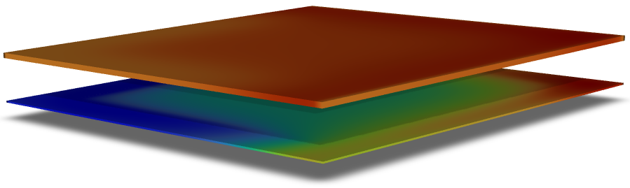
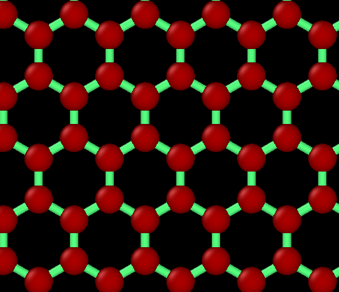
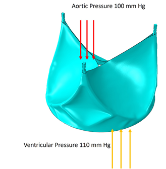

Molecular Dynamics
Doped graphene, fracture behavior, thermal transport, polymer electrolytes, RDF, MSD, and cluster analysis.
Mechanical Engineer · Simulation Researcher · PhD Applicant
Computational mechanical engineer working across CFD, molecular dynamics, finite element analysis, nanomaterials, biomaterials, polymer electrolytes, and passive thermal management.
Research profile
Robel is a mechanical engineer from Shahjalal University of Science and Technology with hands-on experience in computational simulation, mechanical design, scientific writing, and data analysis.
His work connects atomistic material behavior, passive thermal systems, electrochemistry, and biomedical device mechanics.
Read the full profileDoped graphene, fracture behavior, thermal transport, polymer electrolytes, RDF, MSD, and cluster analysis.
Transient CFD, phase change materials, passive cooling, conjugate heat transfer, and climatic boundary conditions.
Polymeric heart valve leaflets, reinforcement strategies, CAD modeling, image analysis, and durability-focused design.
Selected research

Passive cooling · CFD
3D transient modeling of a PCM roof assembly under hot-humid Bangladeshi climate conditions.

Nanomaterials · MD
LAMMPS simulations of dopant effects on strength, fracture behavior, and thermal conductivity.

Biomaterials · FEA
CAD and analysis supporting fiber-reinforced leaflet durability and hydrodynamic performance.